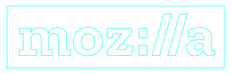
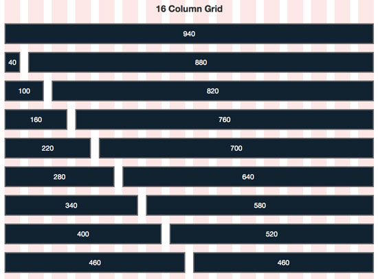

On
the
Grid

CSS


flexbox!
only 1-dimensional constraints
based on old MS proposal
implicit and explicit forms
explicit - place specific elements in specific places
high degree of control
primary outer site layout, app interface
implicit - placement based on sequence of content
high degree of flexibility
"table view", grids, lists
defining the grid
Header
Main area
Header
Main area
CSS
IS
AWESOME
<table>
<img src="spacer.gif" width="50" height="30">
<table>
float along
Paving the Cowpaths
$ → document.querySelector
CSS Grid Layout
2-dimensional art direction for the web!
grid-template-rowsgrid-template-columns
200px 1fr
Phenomenal Cosmic Power
grid-auto-flow
- 1
- 2
- 3
- 4
- 5
- 6
- 7
- 8
- 9
- 10
- 11
minmax()
min-width: 100px;
max-width: 20%;
grid-template-rows: ?
grid-template-rows:
minmax(100px, 20%)
minmax(200px, 1fr);
border-top-width: 4px;
border-left-color: cyan;
border: 4px solid cyan
<div class="page">
<header>Header</header>
<nav>Navigation</nav>
<main>Main area</main>
<footer>Footer</footer>
</div>
+--------------+ | head | +--------------+ | nav | main | | | | | +--------+ | | foot | +-----+--------+
+--------------+ | head | auto +--------------+ | nav | main | 1fr | | | | +--------+ | | foot | auto +-----+--------+ 200px 1fr
head head auto nav main 1fr nav foot auto 200px 1fr
"head head" auto "nav main" 1fr "nav foot" auto / 200px 1fr
demos
fallback-friendly
/* Completely Reasonable layout for older browsers */
article { ... }
@supports (display: grid) {
/* Cutting-edge layout for hip browsers */
}